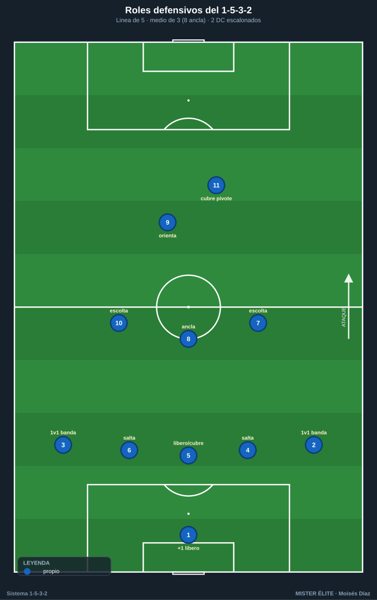
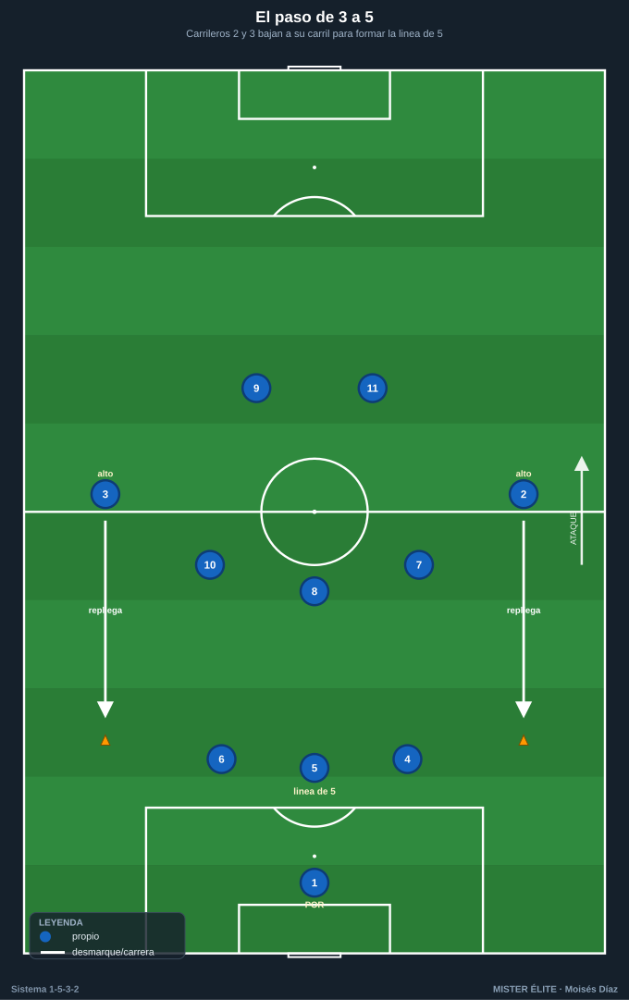
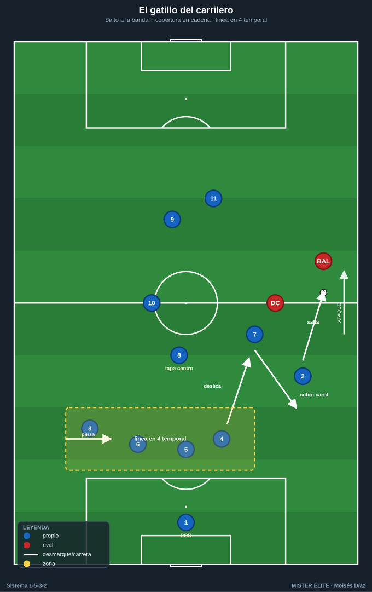
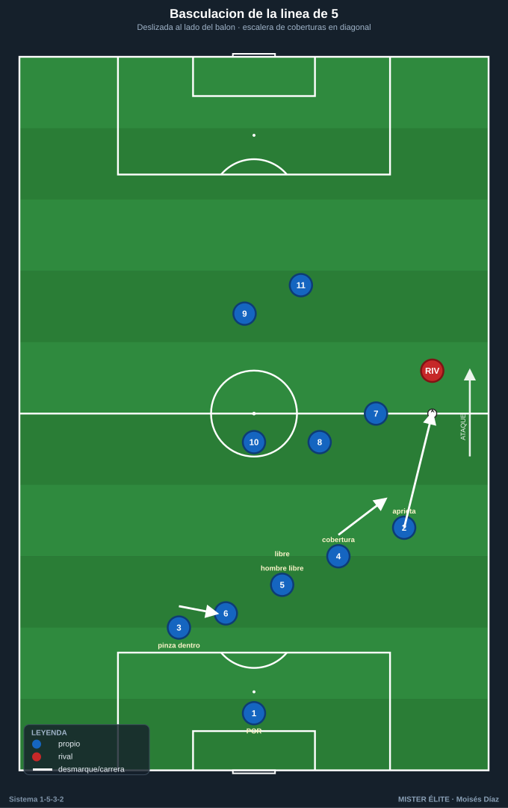

Módulo 02 · Fase defensiva
Sin balón el equipo es un 1-5-3-2: los carrileros bajan a la línea de 5, quedan 3 medios y 2 puntas. El centro es la fortaleza; la amplitud, el riesgo a gestionar.
1. Roles por demarcación (sin balón)
- Portero-líbero (1): el +1 detrás de la línea de 3. Manda la línea (sube/baja, achique, fuera de juego con la voz), barre los pases a la espalda y defiende los centros.
- Central-líbero (5): no salta; es la referencia. Cubre las salidas de 4 y 6, barre la espalda, dirige el fuera de juego.
- Centrales laterales (4 y 6) — "los que saltan": marca de proximidad al delantero que cae a su lado; saltan a presionar al que recibe entre líneas. Cuando uno salta, el 5 y el otro central bascula y cubre.
- Carrileros (2 y 3): su bajada forma la línea de 5. Responsables del 1v1 con el hombre de banda rival; basculan hacia dentro cuando el balón está en la banda contraria (cuarto/quinto defensa interior).
- Pivote (8): ancla por delante de los 3 centrales. Tapa el carril central y el espacio entre líneas, achica al mediapunta rival, primer hombre del contrapressing.
- Interiores (7 y 10): doble función. Presionan arriba con los DC y repliegan a cubrir el carril de su lado, doblando al carrilero cuando salta.
- Dos delanteros (9 y 11): sociedad escalonada. Uno presiona orientando, el otro cubre el pivote rival o el pase al central libre. Nunca en paralelo.

2. El paso de 3 a 5
El gesto base del sistema sin balón.
- Disparador: el equipo pierde el balón o el rival progresa estable → los dos carrileros bajan simultáneamente al lado de los centrales.
- Resultado: 5 defensas (CAR-DFC-DFC-DFC-CAR) + 3 medios + 2 DC.
- Detalle clave: los carrileros bajan antes de que el balón llegue a la banda. Si llegan tarde, el hombre de banda recibe ya encarado (el 1v1 desventajoso).
- Cada carrilero baja a su carril, no en diagonal al centro: cierra su banda, no abandona el espacio exterior.

3. Bloques: alto, medio y bajo
| Bloque | Línea def. | Zona de presión | Entre líneas | Ancho |
|---|---|---|---|---|
| Alto | 45–55 m | inicio rival / 3/4 de campo | 10–12 m | comprimido (~30–35 m) |
| Medio | 30–40 m | eje central, frontal del bloque | 12–15 m | ~35–40 m |
| Bajo | 18–25 m | borde del área, defensa de carriles | 8–12 m (muy junto) | cerrado (~40 m) |
- Compacidad: las tres líneas no deben superar 30–35 m de profundidad en bloque medio. Si se estira por encima de ~15 m entre líneas, aparece el espacio que el 10 rival ataca → recortar.
4. Pressing con gatillo del carrilero
Presión orientada de los 2 DC
- El DC más cercano presiona al central poseedor cerrando el carril interior (presión "de curva", por fuera del cuerpo), empujándolo a la banda.
- El segundo DC tapa al pivote rival (sombra) para que la salida no pase por el centro.
- Señal de salto: pase lento/atrás, control orientado malo, o balón a la banda.
El gatillo: salto del carrilero a la banda
Cuando el balón sale al lateral/hombre de banda rival, el carrilero de ese lado salta a presionarlo arriba. Es el momento más delicado del sistema (se descubre un carril) y exige cobertura en cadena:
- El interior de ese lado (7 o 10) baja a cubrir la espalda del carrilero.
- El central lateral (4 o 6) se desliza a vigilar al delantero que cae al hueco; salta a marcarlo si se ofrece en banda.
- El líbero (5) y el central contrario basculan y cierran el centro; el carrilero del lado débil pinza hacia dentro y entra a la línea, que queda transitoriamente en 4 (3 DFC + ese CAR) mientras el carrilero del lado fuerte presiona arriba.
- El pivote (8) cubre el carril central y el espacio que dejó el interior.
- Si el rival escapa del salto → repliegue inmediato del carrilero y reconstrucción del 5.

Contrapressing (tras pérdida)
- Reacción 3–5 s: los más cercanos (2 DC + interior + pivote) saltan al balón para recuperar o forzar el pase erróneo hacia la cobertura.
- El pivote (8) es el ancla: tapa el pase interior de salida del rival.
- Si no se recupera en el primer impulso → caída ordenada a bloque medio (no perseguir individualmente).
5. Basculación, coberturas y permutas
- Basculación: el bloque se desplaza hacia el lado del balón, superpoblando el lado fuerte. La línea de 5 bascula como un acordeón: el carrilero del lado fuerte aprieta, el del lado débil se mete dentro (casi central). El medio de 3 bascula al unísono 8–12 m por delante.
- Central salta → líbero cubre: si 4 o 6 salta, el 5 asegura la espalda y el central contrario estrecha.
- Carrilero salta arriba → interior + central cubren (cadena del §4).
- Permuta CAR–DFC: si el carrilero es desbordado, el central lateral sale a la banda a tapar y el carrilero cae a ocupar el hueco del central.
- Regla de oro: un hombre cubre por cada hombre que salta; nunca dos saltos simultáneos del mismo lado sin cobertura por detrás.

6. El problema de la amplitud y sus soluciones
El punto débil
Cuando el rival juega ancho con dos extremos abiertos y cambia rápido de banda, el bloque (que ha basculado) llega tarde y el carrilero queda 1v1 o 2v1 en el lado débil. El espacio a la espalda del carrilero que ha saltado es la zona de mayor peligro.
Soluciones aplicables
- Basculación rápida y anticipada: desplazar al primer pase, no al recibir. El carrilero del lado débil entra a la línea antes del cambio.
- Ayuda del interior (doble esfuerzo): el 7/10 del lado débil repliega a doblar al carrilero → 2v1 propio en banda.
- Salto del central lateral (4/6) a la banda: ante el 2v1, el central tapa al desbordador mientras el 5 y el central contrario estrechan (mantienen 2 centrales en el área).
- Repliegue del DC del lado del cambio: el delantero cercano persigue el balón en su trayectoria, ralentizando el cambio.
- No bascular en exceso: dejar al carrilero del lado débil algo más alto/abierto para reducir la distancia del cambio.
- Orientar la presión hacia dentro: cerrar el carril de cambio (sombra al pase diagonal) para que el rival circule por dentro, donde el bloque es fuerte.
7. Achique, fuera de juego y defensa de carriles
- Achique: las 3 líneas suben juntas 5–10 m a la orden del líbero (5) y el portero (1) ante pase atrás / control malo / despeje. Balón cubierto por delante → subir; balón encarado → no subir.
- Fuera de juego: la línea (incluidos los carrileros) sube coordinada para dejar al delantero en fuera de juego cuando el poseedor está presionado y de espaldas. Manda el 5, corrige el 1. Riesgo: los carrileros suelen ir un paso por detrás → entrenar el "sube/para" a una sola voz.
- Defensa de carriles: carril exterior = responsabilidad del carrilero, con cobertura del interior por detrás y del central lateral por dentro. Defender de dentro hacia fuera. Prioridad: no conceder el centro del centro ni la diagonal al segundo palo.
- Defensa del centro: el pivote (8) tapa el carril central y al 10 rival; los 3 centrales controlan el área. El centro es la fortaleza: forzar al rival a jugar por fuera.
Ideas clave
- Los carrileros forman la línea de 5 a tiempo: bajan antes de que el balón llegue a banda.
- Un hombre cubre por cada hombre que salta: sin doble salto sin cobertura.
- El gatillo del carrilero exige cobertura simultánea del interior; sin ella, no se salta.
- El centro es la fortaleza (pivote + 3 centrales); se obliga al rival a jugar por fuera y se le embosca.
- La amplitud es el punto débil: se compensa con basculación anticipada y la ayuda del interior.
Errores comunes
- Carrileros que bajan tarde o en diagonal al centro (dejan la banda abierta).
- Los 2 DC presionando en paralelo (un solo pase los supera).
- Saltar al carril sin cobertura del interior → carril descubierto a la espalda.
- Bascular tan cerrado al lado del balón que el cambio de orientación al lado débil llega gratis.
- Estirar el bloque y conceder el espacio entre la línea de 5 y la de 3 para el 10 rival.